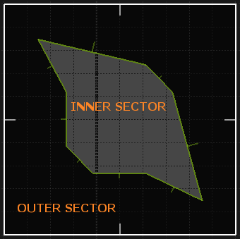

3D Polyobject specification for k8vavoom engine, v0.99
This is description of k8vavoom 3d polyobjects: how to create them, how to use them, and, most important, how to NOT use them.
Think of 3D polyobject as if it is a moving solid sector. Normal Doom sectors are empty inside, i.e. they have empty space between their floors and ceilings. 3D polyobject is the inverse of that: it has solid space between its floor and ceiling, and you can stand on its ceiling (which will look like platform floor for the player).
TOCHow to draw 3d polyobject
How to spawn 3d polyobject
How to set 3d polyobject height (and texture parameters meaning)
Linked 3d polyobjects
Line blocking flags
Notes about movement
New ACS API Overview
ACS API Explanation
- Polyobj_MoveEx
- Polyobj_MoveToEx
- Polyobj_MoveToSpotEx
- Polyobj_IsBusy
- Polyobj_GetAngle
- Polyobj_MoveRotateEx
- Polyobj_MoveToRotateEx
- Polyobj_MoveToSpotRotateEx
- Polyobj_RotateEx
- POBJ_FLAG_SIDE_CRUSH
How to create 3d polyobject
Drawing 3d polyobjects is very easy, it is not much different from drawing a standard polyobject. Please, refer to any polyobject documentation. I will only describe the differences here.
Each 3d polyobject should consist of one sector, created with closed contours. The shape and the number of the contours can be arbitrary, as long as all contours are closed, and there are no self-intersections. All lines should point outside of that "inner" sector, and should be marked as "impassable". Of course, those lines should be two-sided. ;-)
Please, note that breaking any requirement may lead to undefined result. I.e. your invalid 3d polyobject may work, and you may even get some fancy effects, but there are no guarantees that it will keep working in any following engine build.
Here is the picture for you.
There are two sectors on the picture. "Inner sector" is 3d polyobject sector. As you can see, its shape is not convex, but it is closed, and all lines points outside of it. The outer sector is just a "container" for polyobject. It will not be visible in-game.
You can place normal polyobject anchor thing to mark the anchor point of your 3d polyobject. If you will not do it, the engine will select some point on its own. It will try to select a point close to polyobject center, but it is not guaranteed. The algorithm to calculate center point may change in the future, so you should ALWAYS use anchor things.
Inner sector height will be used as 3d polyobject height. But please, note that maximum height is limited by middle texture height, if you won't set your middle texture as wrapping. Inner sector floor texture will be the bottom 3d polyobject texture, and ceiling texture will become the top one.
To align floor and ceiling textures, just align your inner sector as you want to. The inner sector will be "cut out" as it is, and will retain its flat align no matter how you'll move it.
You can set top and bottom textures for 3d polyobject lines. Top texture can be made impassable by setting "clip midtexture" line flag. Impassable top textures should be assigned to the both line sides, and should be of the same height, or the engine will refuse loading a map. Bottom texture is just a decoration and will not block movement.
Note that top texture is always mapped from 3d polyobject ceiling up, and bottom texture is always mapped from 3d polyobject floor down.
You can use "midtexture is wrapped" flag to tell the engine that middle texture should be wrapped. Note that all middle textures should be high enough (or wrapped) to fill the whole side. If this rule is violated, the engine will refuse loading a map.
Line alpha and additivenes can be used to control top/bottom texture rendering. Middle texture is always non-alphablended. Do not assign translucent textures to midtex, or the engine will refuse loading a map.
Currently you cannot assign "masked" middle texture (i.e. things like grates and such). This limitation may be removed in the future.
3D polyobject light level is determined by the light level of its inner sector. Currently this is the only thing that controls 3d polyobject ambient lighting.
3D polyobject sound sequence origin will move with the corresponding 3d polyobject anchor. I.e. for things like moving trains, engine sounds will move with them instead of staying at the starting spot. This is done only for 3d polyobjects, old-style polyobject sounds will not move.
How to spawn 3d polyobject
To spawn your 3d polyobject, you should use new thing with editor number 9369.
It's height will specify initial z offset from the inner sector. NOT from the destination one!
The angle is the polyobject tag, as in other polyobject spawners.
arg1 is the sum of 3d pobj flags (see `POBJ_FLAG_xxx` below).
Note: if `POBJ_FLAG_SIDE_CRUSH` is set, entity will be destroyed if it was touched
by a moving 3d pobj side. This is useful to create vertical crushers, because otherwise crushing
3d pobj can try to push an entity away if it is close to the edge. Also, this flag does nothing if
`POBJ_FLAG_CRUSH` is not set.
WARNING! Other things args must be zero! They may be used later, and if you will not set them
to zeroes, your map may break in the future!
How to set 3d polyobject height
3D polyobject height is determined by two parameters: its inner sector, and middle texture of its first line (at the front side).
First, 3d polyobject inner sector sets hard limits: 3d pobj cannot be higher than its inner sector.
Second, if the middle texture of the 3d polyobject first line is not wrapped, then the height is clamped by that texture scaled height (i.e. UDMF Y scale value is in effect). if ML_DONTPEGBOTTOM flag is set, then the texture goes from inner sector floor up, otherwise it goes from inner sector ceiling down (i.e. that flag has the same meaning as for other two-sided lines).
Linked 3d polyobjects
There is a new feature you can use to create complex structures out of simple polyobjects: polyobject links. It is somewhat similar to linked sectors you could use to create complex lifts.
Linked polyobjects will behave as one object, and all operations on the first polyojbect in the link will affect all linked "children". All operations on the link chain are atomic. I.e. if moving/rotating is failed, no objects in chain will be modified. Just think about the link chain as one big object.
To link polyobjects, use things with editor id 9368. Its first argument is the master polyobject id, its second argument is the secondary polyobject id. It will link the secondary polyobject to the master. Note that you cannot link two or more polyobject to one master, so to create complex structures you have to link all polyobjects one to another, creating a "link chain". Linking all polyobjects to a single master will not work.
There is a simplier way to create a link chain of sequential polyobjects, with thing 9367. Its first argument is the first polyobject id, and its second argument is the last polyobject id. The engine will link each polyobject to the next one (in backwards direction if the starting id is higher then the ending id). The sequence can have "holes" (i.e. you can setup link from 1 to 6, but only have polyobjects with ids 2 and 4, for example). The usual link chain restrictions still should be obeyed.
Line blocking flags
Each 3d polyobject line should have ML_BLOCKING flag set. This controls midtexture blocking, and cannot be changed (i.e. midtexture is always blocking).
Other blocking flags controls entity blocking with top texture.
ML_BLOCKEVERYTHING will block... well, every entity.
ML_BLOCKPLAYERS will block players.
ML_BLOCKMONSTERS will block monsters.
ML_BLOCKPROJECTILE will block projectiles.
ML_BLOCK_FLOATERS will block floaters.
You can also block hitscan attacks with ML_BLOCKHITSCAN.
Note that ML_BLOCKEVERYTHING will not block hitscans.
Blocking monster sight with ML_BLOCKSIGHT currently doesn't work, but this WILL be fixed.
WARNING! Setting ML_BLOCKSIGHT flag currently may not work, but don't rely on that! This is a known bug, and it will be fixed!
Note that ML_BLOCKEVERYTHING will not block sight.
Notes about movement
You can move your 3d polyobject by all three axes, and it will carry all things standing on it. Currently
it works like a platform in arcade games: it carries things, but doesn't modify their velocities.
Yet jumping (and only jumping, not walking!) from moving 3d polyobject will add its velocity to the
player velocity. That velocity will be subtracted if the player will land on the same 3d polyobject.
This allows more-or-less proper jumping on moving platforms. Note that for chained 3d polyobjects,
the velocity will be taken from the object you moved via ACS (i.e. most of the time this will properly
work with chain links).
Rotating 3d polyobjects will not add any rotation impulse, though.
Rotating 3d polyobject is allowed too. As you may expect, all things standing on such 3d polyobject will be properly rotated. Floor and ceiling textures will be rotated too (around polyobject anchor point). You can rotate 3d pobj only around Z axis (i.e. the same way non-3d pobjs are rotated). This limitation won't be removed.
Currently, you cannot stack several entities on top of each other and make them move with the 3d polyobject. I.e. some solid entity that is standing on some other solid entity will block the whole movement, and may be crushed (because it is considered as "blocking" one).
New ACS API
Assuming that you are using ZDoom ACC compiler fork, paste the following into your "zspecial.acs".